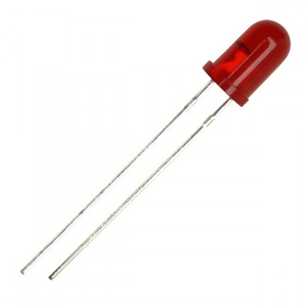

About this project
Introduction to hardware and embedded
Project created by Sabatmonk Contributors:
Document Revision: 1.1 EN October 2019
© This document, as a whole or in parts, is free to use by anyone for anything. I simply ask that you give due credits when applicable and that you contribute to the project.
1. Introduction to hardware
The goal of this guide is to help you in learning embedded hardware, both the design and the code. In order to stay easy and accessible enough, the guide will use the Arduino framework and the Raspberry Pi hardware. This guide will be divided in 3 major sections. The introduction will try to provide the basis required, in terms of electronics and programming in order to grow by yourself after that. While it can be overwhelming at first, it is not harder than learning to sew or cook. The first "meal" might be burned or taste weird, but practices make perfect. One advantage that learning embedded have over learning to cook is that, in most cases, you can modify a faulty program or connection and fix the issue, you do not have to redo the whole recipe. Once you go through all the exercises in this guide, you should have the needed knowledge to turn your own idea into custom electronics. After all, once you know how to make a pie, you only need to change the fillings to create something entirely different using the same technique. Once you understand the core principles, we will have some exercises on the Arduino platform and then some on the Raspberry Pi. The goal of the exercises is to provide you the building block required to continue on your own.
2. Physics 101
What is needed to understand in order to move forward is basic electricity. The best resource I could find in order to teach this knowledge is from the subreddit /r/explainlikeimfive, where people ask questions and others try to answer in a way a five years old would understand. While I’m not saying you have the mental power of a five years old, if it is aimed at them, it should be easy enough to understand. I’ve simplified it to what is useful to us, if you are interested, the full reading is a good starter on electricity and how it makes your TV work.
When doing simple electronics, you can think of electricity in a way similar to how you think of water in pipes. Metals have "empty spaces" in the electron shells of their atoms that allow electrons to travel through in a similar way.
TERMS:
A power source, such as a battery, basically contains two tanks, one on top of the other. The top tank is full, so there is a "pressure" encouraging the electricity to flow into the bottom tank, if you choose to connect them. You can arrange multiple batteries several ways too - you can stack two full tanks on top and two empty tanks on bottom (this is called series) in order to get a higher pressure difference between the tanks. You can also just set them side-by-side; you’ll have the same pressure difference, but it will take twice as long to drain (if you use the same size pipe).
[…]
Voltage is like water pressure. When electricity is flowing, high voltages will cause it to flow faster. Very, very high voltages can even "rupture the pipe", causing sparks.
Resistance is a measurement of how difficult the wire ("pipe") makes it for the electricity to flow through. You can think of a high-resistance wire (or a resistor) as a very small pipe. Also, if you want to get a lot of electricity to go through a high-resistance wire, you will need a lot of voltage (or "pressure").
Current (amps) is a measurement of how quickly the electricity is flowing. High voltage can increase the flow, but so can lower resistance (bigger pipes).
A circuit is any system where the full tank and empty tank are connected. If they’re connected with a very large pipe, this is called a short circuit: the pressure will rapidly equalize, and very large number of electrons will flow through that pipe quickly. All the pressure (read: energy) from the pressurized tank will release all at once, making a whole lot of heat. Maybe even a bang.
[…]
Transistors are like valves. A small amount of electricity applied to the gate will allow large amounts to flow through the input and output terminals.
[…]
This simplified explanation works if you’re an electronics engineer… even though it’s not perfectly accurate. Physicists often say that lay-people tend to envision particle physics like billiard balls on a pool table, even though that analogy breaks down when things start getting very small. Here’s an example of how strange electrons can be: The Double Slit Experiment.
[…]
TL;DR: electricity works like water moving around a sealed system. It seems to have inertia, flow, pressure, pipe resistance, etc. Energy comes from the pressure and flow of electrons, not the electrons themselves.
[1] Now that we understand the electric circuit, there are some particularities that need to be kept in mind every time we work on electronics. Some are repeated but are good to emphasize.
-
Each circuit must have a connection to the power, either 3.3v or 5v. Think of it as the water line of a washing machine.
-
Each circuit must have a connection to the ground. This is the water out line, that empty the washing machine.
-
You must always make sure you are not charged, as static discharge can break the fragile boards. It is recommended not to do electronics in a room full of carpet.
-
You must always include a resistance in a circuit. While it might work without, it will increase the wear on whatever is connected. In most cases, it will result in the component burning(not in a dramatic ball of flames, sorry)
-
When the component you try to connect has 2 connections, the power source is the pin you want to control it with. As an example a simple light is controller by its power input, if i apply power, the lights turn on, and vice-versa. If it has 3 connections, the power pin is used and the third connection is attached to the control pin you want to use. With most components, you can search "component name or serial number"+"pinout or connection" and you should find which connection is what. By convention, black is the ground, red, or white, is power and a colour(yellow and green, usually) is control. You should still verify if this is the case, but if you cannot find anything, it is your best bet.
If you want more information on the inner working of a computer chip, the part that store and execute the code, internet resources like Wikipedia can be a great place to start.
3. Soldering
If you decide to continue on the path of electronics, learning to solder if a must. In our case though, we will not focus on this as we are using solderless board and breadboard to complete our circuits without the need to solder. Just know that there are many good tutorials on the internet and that it is not hard, it just requires practice and your first time might not work, or it might be ugly with 5 times too much tin. No one paint a perfect portrait on the first try in 5 minutes. Make sure your first try is not on something you cannot live without.
4. Programming
This is the second big chunk that overwhelms people beginning in electronics. For developers, i will say that the Arduino framework is using a c++ like language and raspberry pi run complete OSes and can use any language out there. For the rest of you, let’s slowly open the Pandora box that is programing there are two things I would like to mention before we go further. The first is that I am not entirely wrong when I call this a Pandora box: you will discover new way of hating the world, when you find out you were missing a semicolon, you will pull your hairs off after hours of searching the web for a compilation error, but in the end, there is not a lot of joy that competes with your design and your project working, as intended, "first try.” The second is that, while you can find the solution to most, if not all, exercises on the internet, on sites like stack overflow or Github, I recommend not simply copy and pasting it in your project. You are not doing yourself any favour, as it does not help you comprehend what is going on under the hood. Instead, take some time to understand what this piece of code is doing and why it’s working.
There is an almost infinite number of concepts and snippet of information regarding software development, but in this guide, we will focus on those core concepts:
-
Variables, declarations and assignations
-
Functions, parameters and return value
-
Control flow
4.1. Variables, declaration and assignations
In computer programing, a variable is a core concept that is required to perform almost any action. In computer terms, it is a name that we give to a block of memory, usually in the RAM, that can hold whatever information we want. In less tech words, it can be conceptualized as a box, holding whatever we need it to hold. Depending on the programming language used, those boxes can have fixed capacities or not and can either hold anything or only specific type of content. We call the boxes that need to be explicit "Typed Variables.” A typed variable is like having a toy box, a tool box and a bread box. All of those are boxes, but I would not recommend using a toolbox to store a loaf of bread and vice-versa.
There are multiple types of variables, but these are the one you are most likely to work with:
-
Character(char): represents a single character. It can be "a,” "A"(case is important), “\n”(it is called carrier return, as a reference to typographic machine. It is the equivalent of the enter key on your keyboard), etc.
-
Boolean(bool): represents a binary state(True or False, 1 or 0, On or off).
-
Integer(int): represents a whole number(1,2,3,-40000). There is a limit to possible number stored. For example, on the least powerful Arduino board, this number is in the range -32,768 to 32,767. In some case, you might see "unsigned" integer, which means they can store a higher number, but not a negative. Still on the least powerful Arduino, it can store from 0 to 65,535.
-
Long: represents a bigger number, it takes more space in memory but can store bigger numbers. Long, like Integer, can be unsigned for longer range instead of the ability to store negative number. It can range from -2,147,483,648 to 2,147,483,647 or 0 to 4,294,967,295.
-
Floating-point(float): represents a decimal number, up to a precision of 6 decimal digits.
-
Double precision Floating-point(double): is to the float what Long is to int, it allows up to 15 decimal number of precision.
-
Array([]): an array is a collection of variables with a number index. It is like a box containing smaller boxes, with number on them. If we have an array of int, we have a box of boxes containing number. We can access the numbers by "looking" in the big boxes for the correct number index and it will give us the number it contains. It is important to know that most languages begin the index at 0, but some start it at 1. Therefore, in most scenarios, the first box is labelled 0.
-
String: represents a sentence, or a chain of character. Some languages have a String type, while some use characters array.
Declaration is the action of creating a variable and giving it a name.
int this_is_a_number = 4;
char this_is_a_sentence[] = "hello world!";
long large_number = -214748367;
bool this_state_is = true;
bool this_one_is = false;
float a_decimal = 2.458;
We will spend a little bit more time on the "Types" a variable can have. If you use a "loosely typed" language, like Python or JavaScript, all variables will either start with "var,” for variable, or directly the name. In our case, we will need to use type, especially if we use Arduino boards, as they use a derivative of the C++ language, which is "strongly typed,” thus requiring to explicitly tell the system what type of content the boxes have. It should be known that even in case where you are not required to specify a type, the system assumes it and defines one behind the scenes.
Assignation is the action of putting a value into the variable, or an item in the box. In the previous code example[declaration], we declared and assigned at the same time. It is good practice to always assign something during declaration, even if it is a placeholder. You should do so because if you try to access and read a value from a variable that has not been assigned, it will result it will either result in random data or, in most cases, in the forceful closure of the program AKA a "crash.”
4.2. Functions, Parameters and Return Value
Because most programmers are lazy, and because it is useless to redo something twice, most codes that exceed 5 lines in modern languages tend to use functions. A function is a group of statements that together perform a task. You put them together for ease of use later on. A statement is a line of code. A function will usually look like this:
return_type function_name( parameter list ) {
body of the function.
}
In this skeleton, the return type is what type of data the function will return. which, in real code, looks like:
bool Return_true() {
return true;
}
The rule of thumbs is that if a section of your code appears more than one, it should be moved in its own function.
A parameter is a variable that is sent to the function in order for it to perform its duties. A function should only receive parameters that are required.Take this function as an example:
int Add(int first, int second) {
return first+second;
}
In this function, the two parameters are the first and second number that will be added.
A return value is the type of the function result. In the addition case, the type is int (a whole number) because the addition of two whole numbers will give a whole number. In most cases, the return will be a variable type. In cases where a function does not return anything, the return type is "void".
Void do_nothing() {
return;
}
As you can see, there is still a return statement at the end, but it returns nothing. This simply tell the system that this function is over.
4.3. Control flow
Control flows, like loops and conditional statements, are a way to control the way the application react to different input and/or events. A conditional statement is in the form of "If this is true, then do this, otherwise, do that", which, in code, look like:
If( condition == true ){
\\do something
}else{
//do something else
}
In this example, if the variable condition equals true, something will be done, if not, something else will be done. We use "==" because the "=" is used for assignment and we do not want to assign true to the variable, we want to check if it is true. Conditions can be chained for multiple possibilities like so:
If( level == 1 ){
\\do something
}else if( level == 2){
//do something else
}else{
//if nothing matched, to this
}
Loops are pieces of code that are done continuously, in a loop, as long as the condition defines to stop them is not met. The more common loops are:
-
for loops
-
while loops
"For" loops looks like this:
void ForLoop() {
for(int i=0; i<100;i++){
//do something
}
}
In a loop, everything between the brackets is "looped", which means it
is done again, as long as the stopping condition is not met.Let’s
explain the elements we saw in this.
for(int i=0; i\($<$\)100;i)\{ +
} +
This declares a variable called i (i is a standard shortening of
index). +
for(int i=0; *ilatexmath:[$<$]100*;i)\{
}
This defines the limit of the loop. As long of the condition is false,
the loop will continue.
for(int i=0; i\($<$\)100;*i++*)\{
}
This defines what to do at the end of each "iteration,” or loop. In this
case, we increase the value of our index by one. This loop will be done
a hundred times, since we start at 0 and increase the index by 1 every
time. At the end of the last iteration (i = 99), the index will be
increased to 100 and this will make the sopping condition (i<100) false.
This make the loop end. Another loop is the "While" loop, that look like
this:
While(i < 100){
//do something
}
As opposed to the for loop, this one assumes the i is already created and initialized. You also need to increase the index manually inside the loop. If you do not, the condition will always be true and you are stuck in the loop forever. This is called an infinite loop and it prevents your code to do anything else. While the two examples use int as condition, it is possible to have any condition that can be treated as true or false as a stopping condition. For example, we could have this:
While(over != "finished"){
//do something
}
In this example != means "not equal.” As long as the variable "over" does not have the value "finished,” the loop will continue.
4.4. Resources
There are multiple resources that can help you in learning to code. Some of them are free, some require a fee, some have both, where there are some courses, or training, behind a payment wall. Still, the free section is usually enough to understand the way this resource teach and if it is for you. In some cases, it is enough to get you started and you can do the rest by yourself. If, or more realistically when, you get stuck, there is a website that everyone that ever coded will tell you about: https://stackoverflow.com/. This is a site where people ask questions and give answers. In most cases, your question or problem will already be there. Other great resources are the Arduino website[2], which contain tutorials and documentation and the Sparkfun website[3]. Sparkfun is the creator of the raspberry pi and also contain tutorials and documentation for it.
5. tools
5.1. Atom text editor and PlatformIO IDE
In this guide, we will use Atom, the hackable text editor by Github(https://atom.io/) and add PlatformIO(https://platformio.org/) to it, which is an Integrated Development Environment (IDE) for hardware that integrates with it. In order to compile (build) and upload code, you need to open the project folder with PlatformIO. If you have the Github folder, you have a project folder for each exercise. In order to open the folder follow these steps:
-
open PlatformIO home page, if it wasn’t done by default

-
click on open projects
-
click on the folder for the project you want to open
All of the projects folder included are blank, except for new code, that is included the first time it is seen. They are in a stable state that compiles and works, but do nothing.
5.2. Breadboard
The breadboard, also called a solderless board, allows someone to create an electronic prototype without having to solder anything.

On a breadboard, lines are considered a single connection. In other words, all connection on a single line is the same as if they were soldered together. The line division look like this:
Lines are defined by number, so line one is A,B,C,D,E as one line and F,G,H,I,J is another one. The two small borders are linked as columns instead of line and are usually used to share power and ground lines. A "blank" connection usually looks like this:
This set up, in which an Arduino Nano is added, have the ground line following the blue line and the 5v line following the red. Whenever something is connected to a line connected to an Arduino pin, it is linked to it.
5.3. Arduino Nano
While there is a lot of Arduino variation, we will proceed with the Nano edition, for no other reasons that it is cheaper to buy usually. It does require you to solder it, but all exercise can be done with a regular Arduino Uno or Duo. The default pinout, or connection emplacement, is:

For now, it is not needed to understand the difference between analogue and digital, as we will explain it in due time. Simply know that if the code use "digitalWrite" or "digitalRead", you must connect to the digital pin and vice-versa for analogue. A pin defines a connector, like Analog03 or GROUND.This will become clearer when we reach a certain point in the exercises.
5.4. Raspberry pi
The raspberry pi used in the exercises here is the regular model. Any versions works but we assume this layout:

5.5. Resistor
Resistors are a key componant of an electric circuit. In all of our connection, a resistance is required. Where the resistance is applied depends on what you try to connect. Again, internet is your friend. In the exercises here, we will give you this information. Since it is a tutorial and most of the circuits will run for a short amount of time, any resistance provided will probably work, unless stated otherwise. Please remember that if you develop a long-running system at home, or require precision work like a temperature reading,you should use the correct resistance. Usually, a Google search of the sensor you want to use will tell you what resistance to use. For more information on resistances, the tutorial at Sparkfun on the subject is highly recommended. [4]
5.6. LED
The LED will serve as our example for output, as it can be both simple 2 pins (power and ground) or 4 pins (ground and one power input per colour). Most others output will use either a simple 2 pins setup or use controls pins.

5.7. Sensors
Sensors are used in this document as generic input devices, it can be a temperature probe, a button, etc. Sensor can be analogic or digital, and, in some case, both. A digital sensor use the digital pins and vice-versa. A tutorial on the differences between analogic and digital can be found on the Sparkfun website. [5] A gross simplification would be that digital either 1 or 0 (HIGH or LOW, On or OFF), representing the presence of current, and that analogic is a range(i.e. from 0 to 1.073) representing the voltage of the signal. Also, as of why ever use the "less precise" digital, it is faster to read ones or zeroes than to read a precise value. The reality is a little bit more complex(it includes things like wavelength) but this should suffice.
6. Arduino
Arduino is an open-source hardware and software company, project and user community that designs and manufactures single-board micro-controllers and micro-controller kits for building digital devices and interactive objects that can sense and control objects in the physical and digital world. Its products are licensed under the GNU Lesser General Public Licence (LGPL) or the GNU General Public Licence (GPL),[1] permitting the manufacture of Arduino boards and software distribution by anyone. Arduino boards are available commercially in already assembled form or as do-it-yourself (DIY) kits.
[6]
6.1. Arduino specificities
A base Arduino project code will look like this:
#include <Arduino.h>
void setup() {
}
void loop() {
}
The setup section is where you initialize your variables that are needed for the whole program. Most of the code will be put inside the loop section. This is the equivalent of an infinite while loop that continues as long as the Arduino board is supplied with power. Code can be put outside of those two sections, but those sections need to be there. As we go through some exercise, it will make more and more sense.
7. Arduino
Arduino is an open-source hardware and software company, project and user community that designs and manufactures single-board micro-controllers and micro-controller kits for building digital devices and interactive objects that can sense and control objects in the physical and digital world. Its products are licensed under the GNU Lesser General Public Licence (LGPL) or the GNU General Public Licence (GPL),[1] permitting the manufacture of Arduino boards and software distribution by anyone. Arduino boards are available commercially in already assembled form or as do-it-yourself (DIY) kits.
[7]
7.1. Arduino specificities
A base Arduino project code will look like this:
#include <Arduino.h>
void setup() {
}
void loop() {
}
The setup section is where you initialize your variables that are needed for the whole program. Most of the code will be put inside the loop section. This is the equivalent of an infinite while loop that continues as long as the Arduino board is supplied with power. Code can be put outside of those two sections, but those sections need to be there. As we go through some exercise, it will make more and more sense.
7.2. Exercise 1: Look Ma, no connections
The folder name is 01-on_board_led
If you look closely enough on the micro-controller(AKA the electronic
board), you can see a LED that is already on the board:
Since we want to take it slowly, we will start by working with this led. This way, we can make sure we understand the code structure before start playing with electronics. For this exercise, open the folder named 01 in the Arduino folder:
In this folder, go to "src" which mean sources, then open main.cpp. This is the code that will eventually be uploaded to the micro-controller. For this exercise, we will provide all of the code to write, so you can familiarize with the build and upload process. Building refers to the action of transforming the code you wrote to "assembly" code, or code that can be understood by the micro-controller. Uploading is the action of sending this assembly code to the board itself. Usually you need to inform PlatformIO of the type of board this code will be uploaded to, but in the exercise folder, we set everything up for using Arduino Nano. If your micro-controller is different, you need to change the content of platformio.ini to match your board.
Here is the code to put in main.cpp:
#include <Arduino.h>
int the_led = LED_BUILTIN; // assign the number LED_BUILTIN (13) to variable the_led
void setup() {
pinMode(the_led, OUTPUT); // define the_led as an output.
}
void loop() {
digitalWrite(the_led, HIGH); // turn the LED on (HIGH is the voltage level)
delay(1000); // wait for a second
digitalWrite(the_led, LOW); // turn the LED off by making the voltage LOW
delay(1000);
}
Once the code is written, you need to build it. You can do so by selecting the build option in the platformio menu on top of the screen or clicking the check mark on the left menu. You can then upload with the upload option in the menu or the arrow to the right in the left menu.
You can build without the board attached to the computer, but you need a USB connection to upload. Once uploaded, you should see the bottom led on the Arduino blink.
Now that this is done, let’s go through what was done.
#include <Arduino.h>
Include the Arduino header. Simply know that all Arduino project requires this.
int the_led = LED_BUILTIN;
Define a variable name the_led to hold the value of the pin we are using. Here, we assign the value of the internal variable LED_BUILTIN, which is 13. The internal led is wired to this pin. If you were using an eternal led connected to something like pin 12, the line would read.
int the_led = 12;
pinMode(the_led, OUTPUT);
This line establish the "mode" of the pin. Mode is OUTPUT, if you use something like a LED or a speaker, or INPUT, for something like a switch or a sensor that input information to your board. The variable the_led is replaced with LED_BUILTIN, that is replaced by the value 13 during build so the line evaluate to
pinMode(13, OUTPUT);
digitalWrite(the_led, HIGH);
This turn the led on. We use digital write since the pin is digital (D in D13 stands for Digital). High imply high voltage, which is ON.
delay(1000);
Make the program wait for 1000 milliseconds, or 1 second.
digitalWrite(the_led, LOW);
Turn the led off, by settings the voltage to LOW.
7.3. Exercise 2: Let there be light
the folder name is 02-external_led
Now, it’s time to do some actual connections. In this exercise, we will
use pretty much the same code from last time, but instead of using the
on-board light, we will connect our own. Here is the complete circuit:
As stated earlier, every connection needs a resistor. In this one, the led is connected to pin D2. As for the code, you need to change the led number from LED_BUILTIN, which is 13, to the number you used (2 in this case). After building and uploading, your led should be blinking. You should also try to make both of them blink, and, for an added challenge, make them blink at different intervals.
7.4. Exercise 3: Reading Input
We can make a blinking light, it is now time to control it. In this exercise, we will read input from a switch. We will provide the connection diagram of the switch, and the code associated with it, but not the interaction with the led. The end goal is to have a led light up when the button is pressed, and turn off when it is not. Here are 2 tips:
-
the button needs to be pressed continuously in order to register
-
the reading from the button should be used as a value for a conditional statement (see programming basics, control flows)
Here is the connection diagram for a switch:
Here, there are 3 connections. When the button is not pressed, there is a link between the control pin and the ground there is no "power.” Hence, the reading is 0, or LOW. When the button is pressed, there is a bridge that is formed with the power line and the reading becomes 1, or HIGH. Here is the code taking advantage of this:
#include <Arduino.h>
const int button = 3; // the pin number of the button
int buttonState = 0; // this is the state of the button, 0 is off 1 is on
void setup() {
// initialize the button as an input:
pinMode(button, INPUT);
}
void loop() {
// read the state of the button value, it is a digital read, the button must then be connected to a digital pin:
buttonState = digitalRead(button);
// a conditional should be checked here, if the button is pressed, buttonState will be HIGH (or 1, either is fine). It should look like if(buttonState == ...)
}
Let’s explain what is new:
const int button = 3;
This assign a number to a variable, in this case the button variable. The new thing is the keyword "const" in front of it. For simplicity reasons, it was not there before. Basically, a const variable cannot be modified during the execution of the code. As the program advance, a regular variable can be modified, either by changing the value directly, or by doing operation on it (like ++, which add one to a variable containing a number). In the case of a const (for constant) variable, the build operation would detect the attempt to modify a constant variable and would fail.
buttonState = digitalRead(button);
This is our first read! This statement simply take the value of the
button (HIGH if pressed, LOW otherwise) and assign it to the variable
buttonState. Since HIGH and LOW are system variables (const BTW) that
means 1 and 0 respectively, it can be assigned to button state.
You should have all the information needed to complete this exercise. In
the end, you should have a led that goes on and off depending on whether
a button is pressed or not. You can also try to have it blink, with a
speed depending on the state of the button.
7.5. Exercise 4: Analogue vs Digital
In this exercise, we will use both a digital switch and an analogue input to control a single led. The digital switch, the button we used previously, will control whether the light is on or off and the analogue input, a potentiometer, will control the frequency of the blink. This is the potentiometer that we will use:

Here is the connection for a potentiometer:
As you can see, a resistance is not required for this connection. The
central connector is used for control, it is thus linked with an
analogue pin, that will read the value of the potentiometer. In this
example, we use A6.
Here is the code that use this sensor:
#include <Arduino.h>
const int potentiometerPin = A6;
int potentiometerValue = 0; //Do you know why this is not a const?
void setup() {
// we do not need to set pinMode in this analogue read
}
void loop() {
potentiometerValue = analogRead(potentiometerPin); //This is the reason it is not a const
potentiometerValue = map(potentiometerValue, 0, 1023,0,1000); //This is explained in the guide
}
Let’s explain what is new:
const int potentiometerPin = A6;
Instead of just a number, we put A6. This is because the Arduino board possess both digital and analog pins and they share numbers. By default, the system assume that a pin is digital. If it is not, we need to inform it that it‘s analog, thus we use A6 instead of 6.
potentiometerValue = analogRead(potentiometerPin);
This is an analogue read, it will read a value depending on the rotation of the knob. An analogRead will range from 0 to 1023 (as per Arduino documentation). The value is then stored into an int value that was already declared as potentiometerValue. This variable is not a const, since it is modified during the operation of the code.
potentiometerValue = map(potentiometerValue, 0, 1023,0,1000);
There are two new things in this statement. The first one is that we are assigning to a variable the modified version of itself. We are allowed to do so. The reason it works is that the right side of the assignment is evaluated and then put into the variable. If we pull back our box analogy, we can picture this operation as having a box containing two slices of bread. We take the slices out, turn them into a nice sandwich, and put the sandwich into the box. In this scenario, the right side of the assignment is the sandwich making. The second big thing is the usage of the map function. This is an Arduino function that is defined in Arduino.h, that we include every time. By the way, inclusion will be explained in detail later. What the map function does is take a value that can be in a certain range and transform it to fit another range. In this case, we made a range from 0 to 1023 match a range of 0 to 1000, but it could be any range of whole numbers. You can see this function as:
map(the variable containing the whole number, minimum value it can have, maximum value it can have, minimum value we want it to have, maximum value we want it to have)
A simple example would be:
map(3,0,10,0,100)
This would modify 3, in the range of 0 to 10, to be 30, which is the same relative value in the range 0 to 100. Now, you should have all the pieces to complete the task of controlling the blinking frequency. As a tip, try to put the value of potentiometerValue in delay();
7.6. Exercise 5: Let There Be Noise
Light is fun and all, but how about annoying the hell out of everyone next to you? Let’s do that with computer speakers. We are not talking about HD audio 5.1 system here, we are talking about the type of sound a computer makes when we press too many keys at the same time (or, sometimes, when a computer starts). We are talking about this:
Notice the red and black cable? it follows the convention, so it connects like this:
Here is the code to play music:
#include <Arduino.h>
#include <Music.h>
const int speakerPin = 6;
const int ledPin = 2;
Music musicPlayer = Music(speakerPin,ledPin); // This is a home-made library to play some tunes, I added the syncing of the led with the music, so it's easier for you
void setup() {
pinMode(ledPin,OUTPUT);
pinMode(speakerPin,OUTPUT);
}
void loop() {
musicPlayer.sing(1,100); //this start a song (the first parameter is the song number) at the given speed (the second parameter is the speed, in percentage of regular play tempo)
}
Because it is quite a hassle, with lots of trial and error, the actual playing of music is handled by a library made for this purpose. The library is already in the exercise folder. Let’s go through what is going on:
#include <Music.h>
This includes a library that is stored in the lib folder of our program. The goal of a library is to encapsulate functions and variables that works together to achieve a specific goal and that can be used by multiple programs. In our case, it adds music playing functionalities.
Music musicPlayer = Music(speakerPin,ledPin);
This initialize an element that is in charge of playing the music. We call such elements classes. The definition of a class is outside the scope of this training, a Google search on code classes (or class-oriented programming) can give you more information. Just know that by giving the speaker and led parameters, it will manage to play the tunes.
musicPlayer.sing(1,100);
This ask the musicPlayer that we initialized earlier to play a tune (the second, remember arrays) at 100% speed. To modify the playing speed, you could try changing this number. There you go, the challenge is done.
7.7. Exercise 6: Turn that sh** up to 11
This exercise teaches nothing new, but will help you master what we have so far. The main goal is to play music. Since there are 4 songs in the music library, you need to:
-
Have a led dedicated to each song
-
Have a potentiometer that switch between songs
-
Have another potentiometer that set the tempo (the speed of the tune)
-
Have a switch that start the music.
The thing to watch that, in order to control the leds, you need to give them to the musicPlayer when you create them. You might need more than one musicPlayer… Good luck.
7.8. Exercise 7: Let’s sense the world
In this one, we are gonna sense multiple information to make a "weather" box. We need at least a temperature sensor and a photo resistor (it detects light levels). The third sensor is up to you. The goal is to make an rgb light change depending on the temperature, for the red level, light for green level and another sensor for blue level (RGB mean Red Gree Blue, the three primary colours).
Here is a connection diagram of everything new:
Some points that are worth mentioning:
-
The photo-resistor requires both a ground and a control on one of the sides. There is also a resistor between them. For sensors, as opposed to the LEDs we have used up to now, the resistance amount is important, as to much will make it never detect anything and too little will make it to sensible. The amount in this case is 10k ohms. The colour in the diagram is the one you are looking for. If you do not find one, the readings of the sensor will need to be adjusted.
-
The temperature sensor does not need a resistor
-
Each control connection in the LED requires a resistor.
Now for using all of this. Those are the portions of code for anything new:
#include <Arduino.h>
#include <OneWire.h> //For the temperature
#include <DallasTemperature.h> // also for the temperature
#define ONE_WIRE_BUS 3 //what could a define be, it looks like its defining something...
const int photoPin = A5;
int photoValue;
float CValue=0;
float FValue=0;
int redPin = A10; //we need to define a pin for each colour
int greenPin = A8;
int bluePin = A6;
OneWire oneWire(ONE_WIRE_BUS); //required for temperature reading, internet will help you understand if you are interested
DallasTemperature sensors(&oneWire); //required for temperature reading, internet will help you understand if you are interested
void setup(){
pinMode(photoValue, INPUT); //this registration is optional
sensors.begin(); //this is required
pinMode(redPin, OUTPUT); //also one per colour
pinMode(greenPin, OUTPUT);
pinMode(bluePin, OUTPUT);
}
void setColor(int red, int green, int blue) //This is a function, I give it to you, it's stolen from https://learn.adafruit.com/adafruit-arduino-lesson-3-rgb-leds/arduino-sketch
{
#ifdef COMMON_ANODE
red = 255 - red;
green = 255 - green;
blue = 255 - blue;
#endif
analogWrite(redPin, red); //we use analogWrite because digital is limited to 1 and 0, we want more control (0 to 255). it allows shades of colours
analogWrite(greenPin, green);
analogWrite(bluePin, blue);
}
void loop(){
photoValue = analogRead(photoPin); //this value can be from 0 to 1023, you will need to play around to find the tipping point from light to dark
//If only there was a function to make this range closer to the RGB limits (0 to 255)...cough cough exercise 4 cough cough
sensors.requestTemperatures(); //sensor now hold the temperature
CValue=sensors.getTempCByIndex(0);
FValue=sensors.toFahrenheit(CValue); //if you prefer American temperature
//note that function code must be BEFORE we use it in our code.
setColor(0,200,200); //this is how you call a function. Note that this one takes number from 0 to 255, as this is the range of a write function, and also the max value of a colour.
}
That is a lot to cover, let’s start.
#include <OneWire.h>
#include <DallasTemperature.h>
Those are two libraries that allow the temperature to be taken from the sensor without too much trouble.
#define ONE_WIRE_BUS 3
This defines a word (ONE_WIRE_BUS) to be equivalent to a value (3). It is not so different from when const is used, but there are 2 major differences, the type is not specified, and, like "#include", it doesn’t require a ";" at the end. By convention, definitions are in caps lock with underscore "_" for spaces.
OneWire oneWire(ONE_WIRE_BUS);
DallasTemperature sensors(&oneWire);
Those initialize elements required for the temperature probe. More information can be found inline, but just know that they make your life easier.
sensors.begin();
This prepares the temperature probe for temperature reading (it starts temperature readings).
analogWrite(redPin, red);
We need to use analogWrite for precision. If we use digitalWrite(redpin,LOW), it will turn on the red light in the rgb LED, but we have no control on intensity.
photoValue = analogRead(photoPin);
This allows us to get the value of the sensor at the pin defined by photoPin. it will range from 0 to 1023, the range of an analogue sensor.
sensors.requestTemperatures();
This gets the temperatures readings from the temperature probe to the into the sensors object, we retrieve it with
CValue=sensors.getTempCByIndex(0);
Which gives us the value in Celsius. You should now have all the pieces needed. Simply add a sensor and have the results of the sensors control the LED.
7.9. Exercise 8: Good night Sweet Princes and Princesses
There is little more to learn for connection, it is now time to practise code logic. Up to this point, we did simple action/reaction logic: if A happens, do B. Now, we will do more complex operations. The goal here is to do an alarm clock, whenever a button is pressed, a timer start and after an amount of time determined by a potentiometer, a buzzer play a tune. In order to complicate stuff a little, temperature must have an impact on the tune play, and light level influence the speed at which it is played. As an extra bonus, you can add a night light function, so when you press the button, you have a little bit of light to reach the bed. For ecological reasons, we do not want the light to be on if there is enough ambient light.
7.10. Exercise 9: The thousand miles journey begin with a single step
You have completed all i have to teach you, you are ready. From now on, you should have the necessary knowledge to connect pretty much anything and play with it. For any new sensor or output device, you should read the documentation online about it, it should be fairly easy to find the connection schematic and code example on how to use it. With how much Arduino compatible electronic parts, it should be fairly easy to find things to automate and project to start, and possibly never finished. How about a smart light, a smart fish tank, a self-watering plant…
8. Raspberry Pi
The Raspberry Pi is a single-board computer. It differs a lot from Arduino in the computing power and infrastructure sense. It contains a full-fledge ARM processor (quad cores in the latest versions) and up to a gig of ram. While in Arduino we had to code in C like language, in pi, we can use any language supported in ARM Linux distribution. We can do so because the RPi (Raspberry Pi) run full OSs and not just machine code. Java and .net core both have ARM Linux distribution aiming at the Pi, with Microsoft working on a full IoT Windows OS for the RPi. What is really useful with the Pi is that it can link with an Arduino with serial USB and interact with it, allowing to use complex automation on small size scale and with low power consumption, since both the RPi and the Arduino are powered by USB (5v currant).
8.1. Project 1: Automated garden
This project will show how to use a RPi to control an arduino with Serial and transfert data and command. While most of the tasks could be done with hard-coded values with the Arduino alone, enabling communication between the two devices open the way to a lot of complex automation systems. The garden is composed of a Raspberry Pi, serving as a controller, an Arduino controlling sensors, pump and lights, a lamp and a small water pump.
8.1.1. Arduino
The Arduino is in charge of taking readings from sensors and executing commands from the RPi. The informations the controller(in this case the Raspberry Pi) needs is the light level, the moisture of the ground and the temperature. The information the Arduino can receive is to water the plants and turn on or off the lamps. For the pump, we can either use an Arduino controlled one or a pump activated with a relay switch. Since the lights will already use switch, this is gonna use a smaller pump with direct control. A relay switch allows the controls of external electricaly powered device, like a lamp, by closing the electric circuit. It is like a controlled wall switch. Here is the Arduino wiring diagram, without the sensors,

There are two things to keep in mind, they are true for this project and also any future projects:
-
something that draw a lot of current, like a pump or a motor, should be powered from another source than the micro-controller. Usually, the red wire should be powered by an external source while the control wire is connected to the controller. The ground can still be attached to either.
-
If you are not comfortable with high current, do not use relays. You can control household appliance with it and it is super usefull, but is it also dangerous if handle improperly. High voltage can kill you, never treat it like a game.
The Arduino code will look something like that, the rellay, the pump and the serial connection is explained, the rest was shown earlier.
#include <Arduino.h>
#include <ArduinoJson.h>
const int relay = 3;
const int pump = 8;
bool lightSwitch = 0;
int pumptimer = 0;
void setup() {
Serial.begin(9600);//this begin the Serial connection
pinMode(relay, OUTPUT);
pinMode(pump, OUTPUT);
while (!Serial) continue; //wait for serial port to be ready
}
void SendData(int temperature, int light, int moisture){
StaticJsonBuffer<200> jsonBuffer; //this might need to grow bigger if there is more sensors this is the byte size of the JsonArray
JsonObject& root = jsonBuffer.createObject();
JsonArray& data = root.createNestedArray("data");
JsonObject& tempSensor = jsonBuffer.createObject();
tempSensor["sensor"] = "temperature";
tempSensor["reading"] = temperature;
data.add(tempSensor);
JsonObject& moistSensor = jsonBuffer.createObject();
moistSensor["sensor"] = "moisture";
moistSensor["reading"] = moisture;
data.add(moistSensor);
JsonObject& LightSensor = jsonBuffer.createObject();
LightSensor["sensor"] = "light";
LightSensor["reading"] = light;
data.add(LightSensor);
root.printTo(Serial);// This prints the json data to the serial port*/
}
void ReceiveData(){
//this assume this data format {"light":1,"pump":2}
StaticJsonBuffer<200> reception;
JsonObject& received = reception.parseObject(Serial);
lightSwitch = received["light"]; //1 == lights on
pumptimer = received["pump"]; //assumes the controller return a value representing the seconds pumps should run*/
}
void loop() {
SendData(15, 100, 90);
while(Serial.available() == 0){} //wait for serial data
ReceiveData();
/*
digitalWrite(relay, HIGH);//complete the circuit, turn the light on
digitalWrite(relay, LOW);//close the light
digitalWrite(pump, HIGH);//complete the circuit, start the pump
digitalWrite(pump, LOW);//stop the pump
*/
digitalWrite(relay, lightSwitch);
if(pumptimer>0){
digitalWrite(13, HIGH);
delay(pumptimer*1000);//convert to milliseconds
digitalWrite(13, LOW);
}
}
8.1.2. RPi
This assume you have a Raspberry Pi with an OS installed, you can use the raspian distribution. Once this is installed, you can use the programming langage of your choice. For ease of use, we will use python. At this point, we are doing regular programmation, without the sensors, but using serial connection to talk to the Arduino, that have all the sensor. Here is a python file that interact with the Arduino
import json
import serial
import time
ser = serial.Serial('/dev/ttyUSB0', 9600, timeout = 1) //this assume no other usb serial connection are actives
temperature = 0
lightLevel = 0
readOut = 0 #chars waiting from laser range finder
print ("Starting up")
connected = False
while True:
while True:
try:
print ("Attempt to Read")
readOut = ser.readline()
jsonDecoded = json.loads(readOut)
print ("Reading: ", jsonDecoded)
#temperature = jsonDecoded["light"]
break
except:
time.sleep(10)
pass
commands = {
"light":1,
"pump":2
}
print ("Writing: ", commands)
ser.write(json.dumps(commands).encode())
time.sleep(10)
ser.flush() #flush the buffer
8.1.3. Connecting both
Plug the USB cable from the RPi to the Arduino and start the Python code. Done.